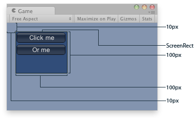

BeginArea is called at construction, and EndArea is called when the instance is disposed.
By default, any GUI controls made using GUILayout are placed in the top-left corner of the screen.
If you want to place a series of automatically laid out controls in an arbitrary area, use GUILayout.BeginArea to define a new area for the automatic layouting system to use.
See Also: BeginArea, EndArea

Explained Area of the example.
using UnityEngine;
public class ExampleClass : MonoBehaviour { void OnGUI() { using (var areaScope = new GUILayout.AreaScope(new Rect(10, 10, 100, 100))) { GUILayout.Button("Click me"); GUILayout.Button("Or me"); } } }
Constructors
| GUILayout.AreaScope | Create a new AreaScope and begin the corresponding Area. |